4. Geocentric Models
Normal Distribution
Normal by Addition
(Keep in mind the example of field soccer, coin tossing, and stepping right and left on page 72)
library(rethinking)
# given that the steps for each person is represented by a list of 16 random numbers
# between -1 and 1:
# run 1000 simulation of stepping left and right, and store the final result/position
pos <- replicate(1000, sum(runif(16,-1,1)))
# plot the end positions around the half line of soccer field
plot(pos)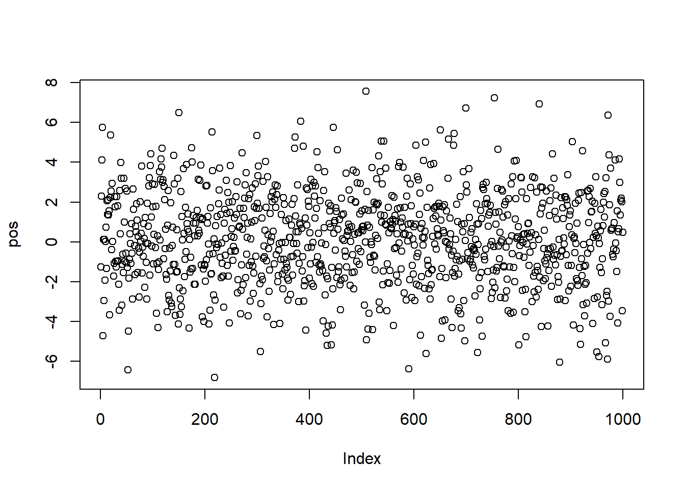
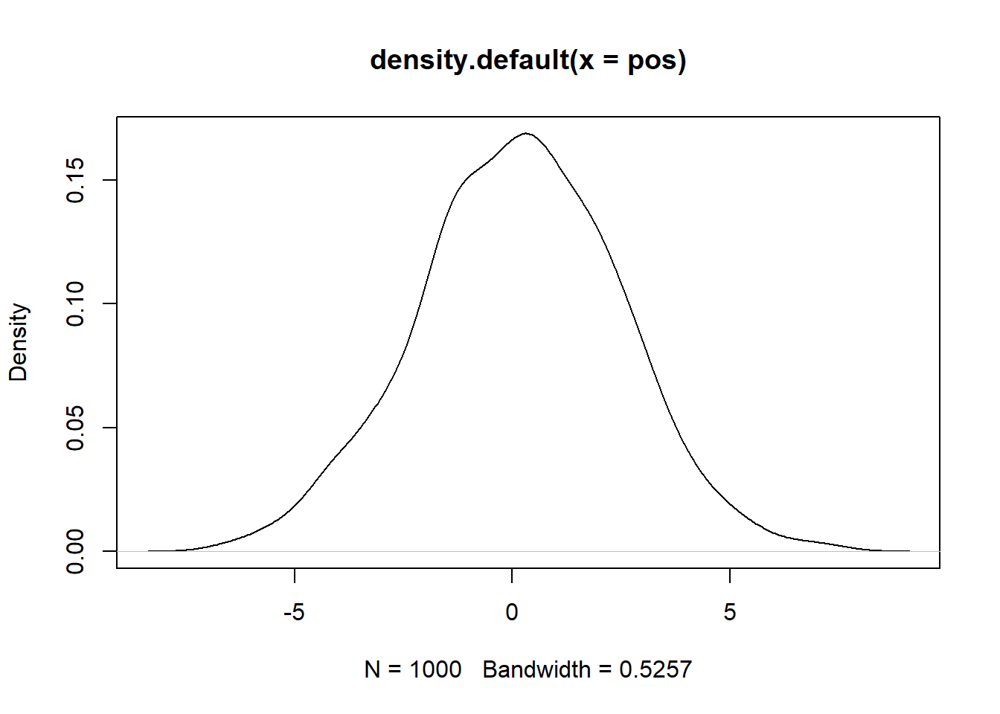
Normal by multiplication
(See the example on page 74) Note that the interaction between the growth deviations converges to Gaussian dist as long as the effect is small.
growth_samll_effect <- replicate(1000, prod(1+runif(12,0,0.1)))
dens(growth_samll_effect, norm.comp = TRUE)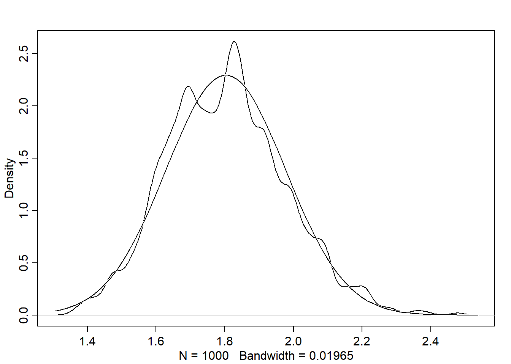
growth_big_effect <- replicate(10000, prod(1+runif(12,0,0.5)))
dens(growth_big_effect, norm.comp = TRUE)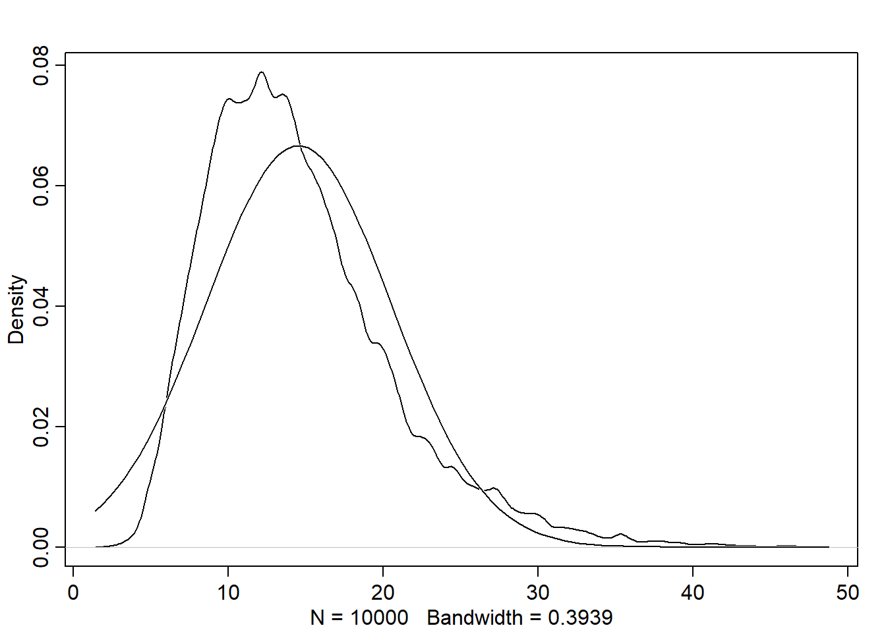
Gaussian model of human height
The data
## 'data.frame': 544 obs. of 4 variables:
## $ height: num 152 140 137 157 145 ...
## $ weight: num 47.8 36.5 31.9 53 41.3 ...
## $ age : num 63 63 65 41 51 35 32 27 19 54 ...
## $ male : int 1 0 0 1 0 1 0 1 0 1 ...## mean sd 5.5% 94.5%
## height 138.2635963 27.6024476 81.108550 165.73500
## weight 35.6106176 14.7191782 9.360721 54.50289
## age 29.3443934 20.7468882 1.000000 66.13500
## male 0.4724265 0.4996986 0.000000 1.00000The model and prior
Based on domain-specific information, we decide that the range of plausible human heights is \(178 \mp 40\). The std. deviation must be basically positive \(h_i \sim Normal(\mu, \sigma)\)
Given that the parameters are independent, the prior is:
\(Pr(\mu, \sigma) = Pr(\mu)Pr(\sigma)\)
Where:
\(\mu \sim Normal(178,20)\) \(\sigma \sim Uniform(0, 50)\)
Let’s plot the priors: - Mean

- Std. deviation
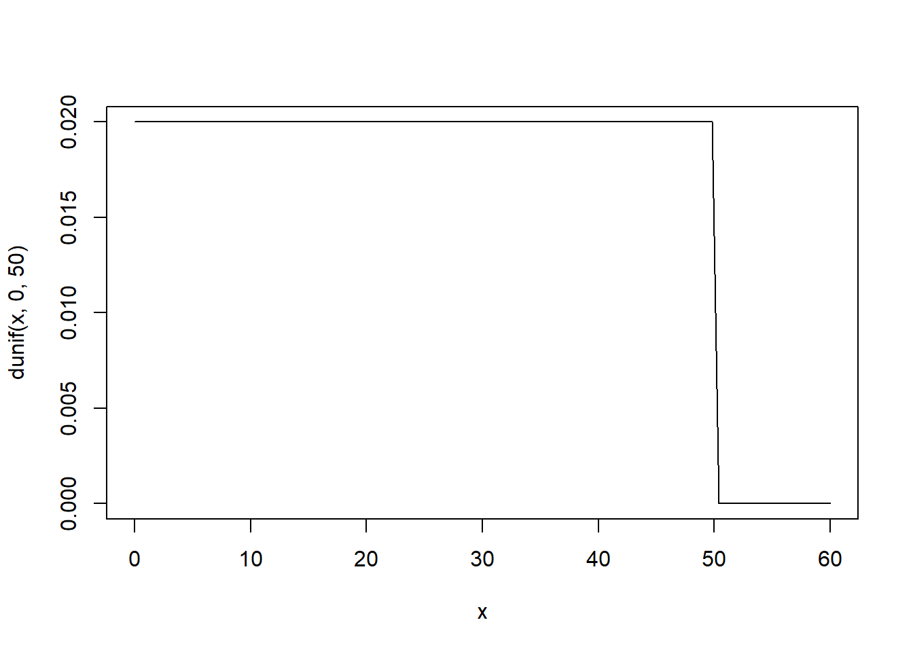
Let’s simulate heights based on the priors. This is called the prior predictive simulation:
sample_mu <- rnorm(1e4, 178, 20)
sample_sigma <- runif(1e4, 0, 50)
prior_h <- rnorm(1e4, sample_mu, sample_sigma)
dens(prior_h)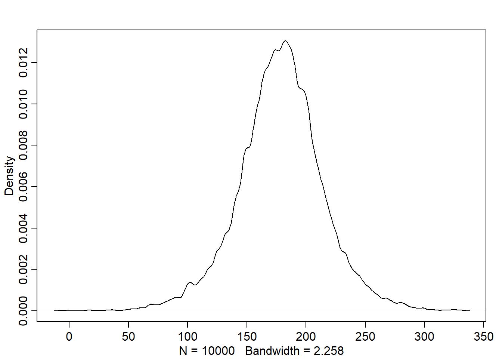
So far, the model is defined before showing it the data. We can change the prior \(\mu\) std. deviation to see how the model is sensitive to the prior choices that aren’t relying on scintific knowledge as we did.
sample_mu <- rnorm(1e4, 178, 100)
sample_sigma <- runif(1e4, 0, 50)
prior_h <- rnorm(1e4, sample_mu, sample_sigma)
dens(prior_h)
Note how the result doesn’t make sense with negative and very large heights.
Grid approximation of the posterior distribution
Since we have 2 parameters, grid approx. method is not practical. However, we will try using it computing the log-likelihood:
# we will compute the approximation using the height data of persons over 18 y.o.
d2 <- d[d$age >= 18,]
mu.list <- seq(from=150, to=160, length.out=100)
sigma.list <- seq(from=7, to=9, length.out=100)
# Create a Data Frame from All Combinations of Factor Variables
post <- expand.grid(mu=mu.list, sigma=sigma.list)
# compute the log-likelihood
post$LL <- sapply(
1:nrow(post),
function(i) sum (
dnorm(d2$height, post$mu[i], post$sigma[i], log=TRUE)
)
)
post$prod <- post$LL + dnorm(post$mu, 178, 20, TRUE) + dunif(post$sigma, 0, 50, TRUE)
post$prob <- exp(post$prod - max(post$prod))
contour_xyz(post$mu, post$sigma, post$prob)

Sampling from the posterior
# generate random indexes of rows
sample.rows <- sample(1:nrow(post), size=1e4, replace=TRUE, prob=post$prob)
sample.mu <- post$mu[sample.rows]
sample.sigma <- post$sigma[sample.rows]
# this shows the most plausible combinations of mu and sigma
plot(sample.mu, sample.sigma, cex=0.5, pch=16, col=col.alpha(rangi2, 0.1))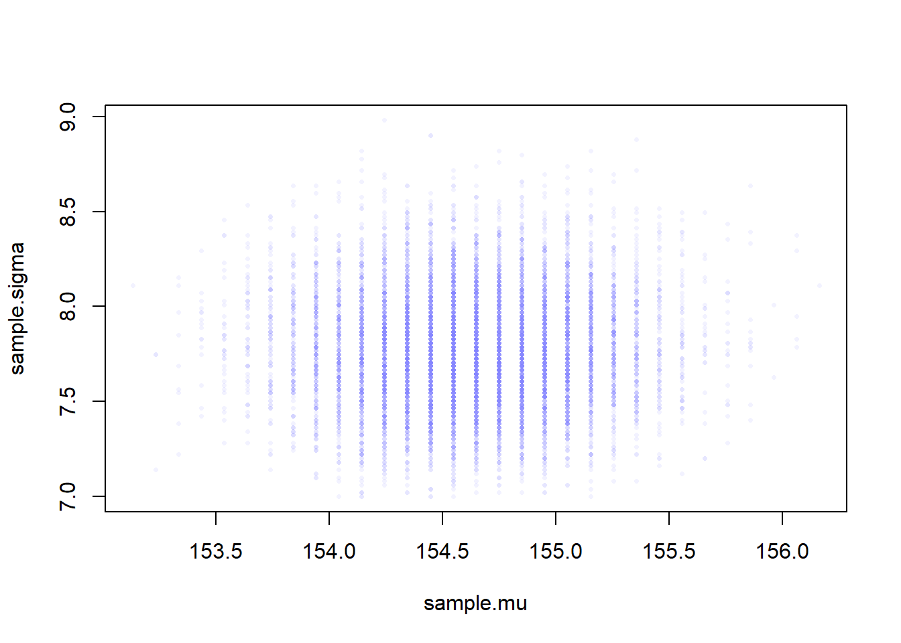
Let’s check the shape of marginal posterior densities:

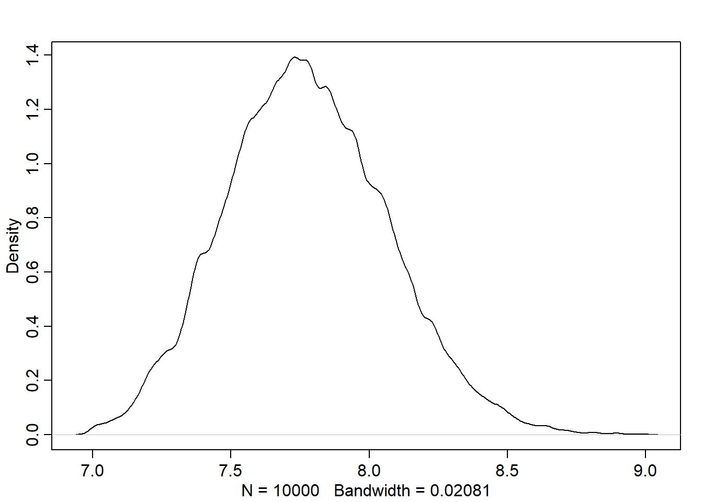
Note that the density for sigma has a longer right tail
d3 <- sample(d2$height, size = 20)
mu.list <- seq( from=150, to=170 , length.out=200 )
sigma.list <- seq( from=4 , to=20 , length.out=200 )
post2 <- expand.grid( mu=mu.list , sigma=sigma.list )
post2$LL <- sapply( 1:nrow(post2) , function(i) sum( dnorm( d3 , mean=post2$mu[i] , sd=post2$sigma[i] , log=TRUE ) ) )
post2$prod <- post2$LL + dnorm( post2$mu , 178 , 20 , TRUE ) + dunif( post2$sigma , 0 , 50 , TRUE )
post2$prob <- exp( post2$prod - max(post2$prod) )
sample2.rows <- sample( 1:nrow(post2) , size=1e4 , replace=TRUE , prob=post2$prob )
sample2.mu <- post2$mu[ sample2.rows ]
sample2.sigma <- post2$sigma[ sample2.rows ]
plot( sample2.mu , sample2.sigma , cex=0.5 , col=col.alpha(rangi2,0.1) , xlab="mu" , ylab="sigma" , pch=16 )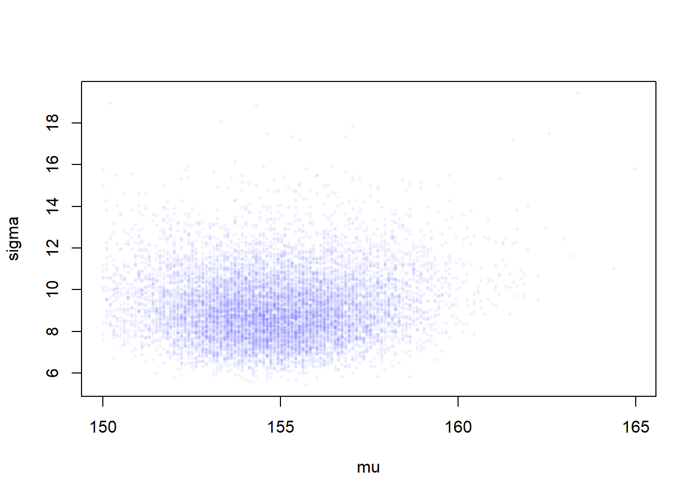
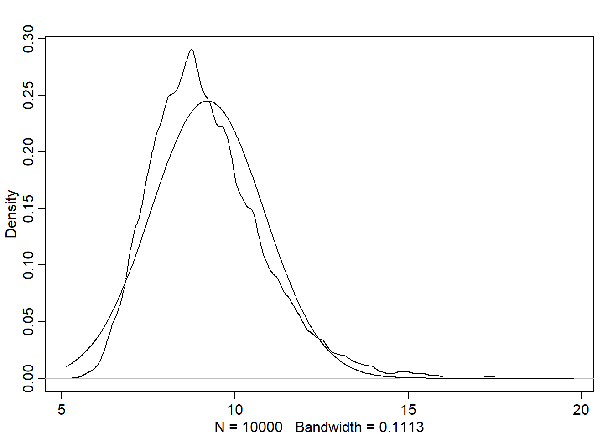
Finding the posterior with quap
Quadratic Approximation is good to make inferences about the shape of posterior, particularly its peak that lie at the maximum a posteriori (MAP)
Let’s first load the data:
Now, we will define our model with code:
\(h_i \sim Normal(\mu, \sigma)\)
\(\mu \sim Normal(178,20)\)
\(\sigma \sim Uniform(0, 50)\)
Note: alist stores formulas without executing the expression in the code unlike list
Now, we fit the mode to the data in `d2`:
Let’s take a glance at the model (i.e posterior dist):
## mean sd 5.5% 94.5%
## mu 154.607201 0.4119492 153.948827 155.265575
## sigma 7.730478 0.2913055 7.264916 8.196041Sampling from a quap
## mu sigma
## 1 155.3808 7.372322
## 2 154.8912 7.774284
## 3 155.1147 7.671096
## 4 154.1441 7.818519
## 5 155.0759 7.983457
## 6 154.8982 7.093661## mean sd 5.5% 94.5%
## mu 154.604963 0.4134325 153.952468 155.276243
## sigma 7.732341 0.2863066 7.282393 8.195132Comparing these values to the output from precis(m4.1), we found it very close.
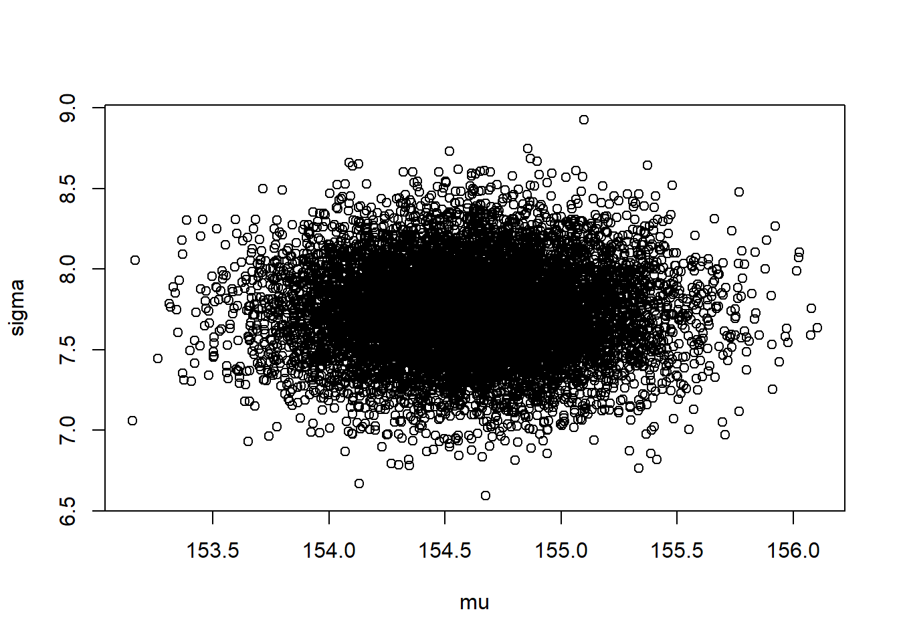

Variance-Covariance Matrix
It is an essential compnent in the
quapalgorithm.It tells us how each parameter relates to every other parameter in the posterior distribution.
It can be factored into 2 elements:
Vector of variances for the parameters
diag(vcov(model))Correlation matrix that tells how changes in one parameter lead to correlated changes in the others
cov2cor(vcov(model))
Linear prediction
Using the association between predictor variables and outcome variable, we want to predict the later. This is how linear regression works.
Linear model strategy: probabilistic approach
We tell the model (golem) the following: “Assume that the predictor variable has a constant and additive relationship to the mean of the outcome. Consider all the lines (formed by the combinations of parameter values) that relate one variable (or more) to the other. Rank all of these lines by plausibility, given these data.”
The resulted model is a posterior distribution
In the following example, we want to predict the height using the weight as a predictor variable. This code plot the data to use in model fitting:

We want to use the Gaussian model of height we built in the previous chapters but making the mean of height \(\mu_i\) is a function of weights where weight values are denoted by \(x\). Here is the model:
\(h_i \sim Normal(\mu_i, \sigma)\)
\(\mu_i = \alpha + \beta(x_i - \bar{x})\)
\(\alpha \sim Normal(178, 20)\)
\(\beta \sim Normal(0, 10)\)
\(\sigma \sim Uniform(0,50)\)
Notations:
\(\bar{x}\) is the mean of weights
\(x_i\) weight at row \(i\)
\(\mu_i\) the mean of heights are row \(i\)
\(h_i\) the height at row \(i\)
\(\alpha, \beta\) are parameters to learn
Note all relationships are Stochastic except the relationship between the height mean and weight.
The parameters are made up as devices that will help us to manipulate \(\mu\). Here is what each parameter does:
- \(\alpha\) (intercept): represents the expected height when \(x_i=\bar{x}\)
- \(\beta\) (slope): represents the rate of change in expectation when \(x_i\) changes by 1 unit
Priors
The unobserved variables are called parameters (\(\alpha, \beta, \sigma\)) and their distributions are called priors.
Each combination of parameter values implies a unique line
Let’s simulate the prior predictive distribution to see the possible lines
set.seed(2971)
N <- 100 # 100 lines
a <- rnorm(N, 178, 20)
b <- rnorm(N, 0, 10)
# prepare the canvas for plotting
plot(NULL, xlim=range(d2$weight), ylim=c(-100,400), xlab="weight", ylab="height")
abline(h=0, lty=2) # no one is shorter than zero!
abline(h=272, lty=1, lwd=0.5) # the world's tallest person
xbar <- mean(d2$weight)
# simulate the possible lines
for (i in 1:N) curve(a[i] + b[i]*(x-xbar),
from=min(d2$weight),
to=max(d2$weight),
add=TRUE,
col=col.alpha("black", 0.2))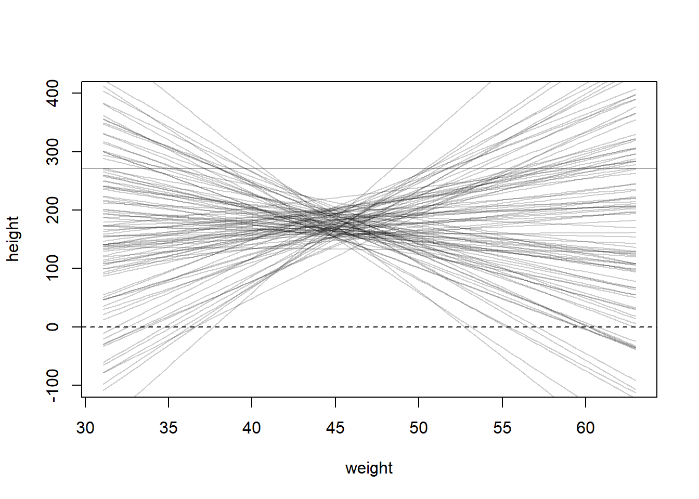
As we can see, not all the lines seem to represent the relationship between weight and height for human. Negative relationship doesn’t make sense in this context.
We want to restrict \(\beta\) to positive numbers so we only get positive relationship. Therefore, we can define the prior as Log-Normal instead to enforce positive relationship:
\[ \beta \sim Log-Normal(0,1) \]
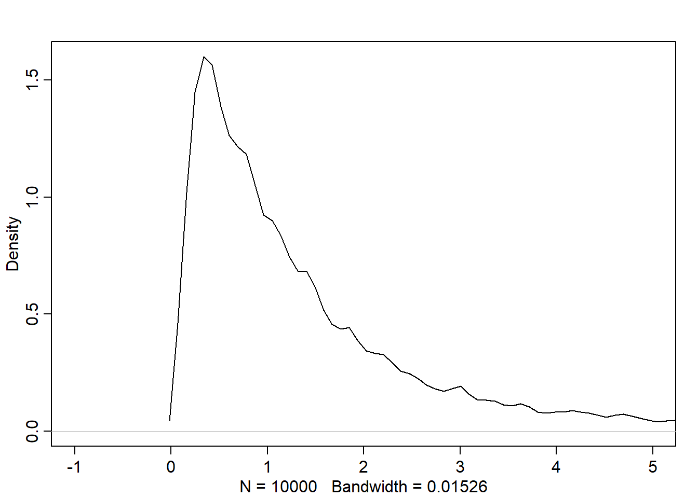
We can see the distribution is defined only on the positive beta values.
Now, let’s do the prior predictive simulation again with the new prior:
set.seed(2971)
N <- 100 # 100 lines
a <- rnorm(N, 178, 20)
b <- rlnorm(N, 0, 1) # log-normal prior
# prepare the canvas for plotting
plot(NULL, xlim=range(d2$weight), ylim=c(-100,400), xlab="weight", ylab="height")
abline(h=0, lty=2) # no one is shorter than zero!
abline(h=272, lty=1, lwd=0.5) # the world's tallest person
xbar <- mean(d2$weight)
# simulate the possible lines
for (i in 1:N) curve(a[i] + b[i]*(x-xbar),
from=min(d2$weight),
to=max(d2$weight),
add=TRUE,
col=col.alpha("black", 0.2))
Now, the result is much more sensible!
Finding the posterior distribution
The model is defined now along with the priors. We are now ready to build the posterior approximation using quap
library(rethinking)
data("Howell1")
d <- Howell1
d2 <- d[d$age >= 18,]
xbar <- mean(d2$weight)
# fit the model
m4.3 <- quap(
alist(
height ~ dnorm(mu, sigma),
mu <- a + b * (weight-xbar),
a ~ dnorm(178, 20),
b ~ dlnorm(0, 1),
sigma ~ dunif(0, 50)
),
data=d2
)To interpret the posterior, we can use either tables or plots. Plots gives more information about the posterior. However, let’s see the summary table:
## mean sd 5.5% 94.5%
## a 154.6013671 0.27030766 154.1693633 155.0333710
## b 0.9032807 0.04192363 0.8362787 0.9702828
## sigma 5.0718809 0.19115478 4.7663786 5.3773831We also need to see the covariance among the parameters by computing the variance-covariance matrix:
## a b sigma
## a 0.073 0.000 0.000
## b 0.000 0.002 0.000
## sigma 0.000 0.000 0.037Plotting the posterior against the data
plot(height~weight, data=d2, col=rangi2)
post <- extract.samples(m4.3)
a_map <- mean(post$a)
b_map <- mean(post$b)
curve(a_map + b_map * (x-xbar), add=TRUE)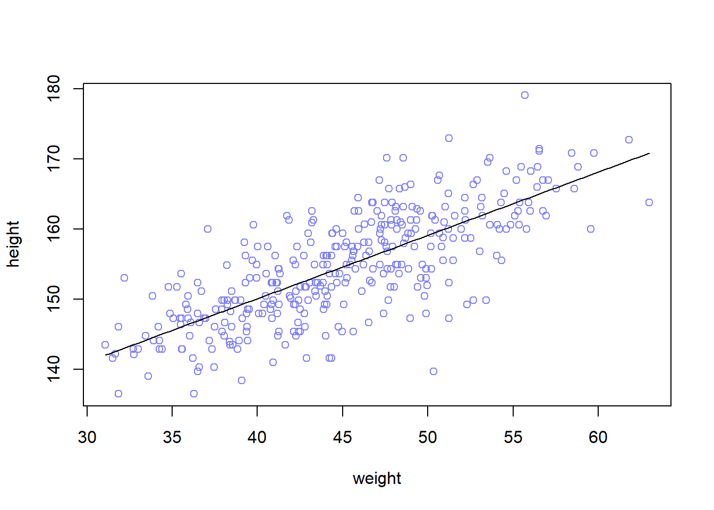
## a b sigma
## 1 154.5564 0.9000245 4.768499
## 2 154.4602 0.8474034 5.136055
## 3 154.7858 0.9440438 5.313512
## 4 154.4490 0.8806246 4.683555
## 5 154.4639 0.8397176 5.185017Uncertainty around the mean
We want to know the uncertainty around the mean of posterior in order to determine the confidence in the relationship between predictor and outcome, since the posterior we plot in the previous step is the MAP, which is the mean of many lines formed by the posterior.
Here is a sample of possible lines:
## a b sigma
## 1 154.5564 0.9000245 4.768499
## 2 154.4602 0.8474034 5.136055
## 3 154.7858 0.9440438 5.313512
## 4 154.4490 0.8806246 4.683555
## 5 154.4639 0.8397176 5.185017Let’s see how the confident about the location of the mean changes based on data size. First, we will extract the first 10 cases and re-estimate the model:
N <- 10
dN <- d2[1:N, ]
mN <- quap(
alist(
height ~ dnorm(mu, sigma),
mu <- a+b*(weight - mean(weight)),
a ~ dnorm(178, 20),
b ~ dlnorm(0, 1),
sigma ~ dunif(0, 50)
), data=dN
)Plot 20 of these lines to see what the uncertainty looks like:
post <- extract.samples(mN, n=20)
# plot the 10 sampled cases
plot(dN$weight, dN$height,
xlim=range(d2$weight), ylim=range(d2$height),
col=rangi2, xlab="weight", ylab="height")
mtext(concat("N = ", N))
for(i in 1:20) curve(post$a[i] + post$b[i] * (x-mean(dN$weight)), col=col.alpha("black", 0.3), add=TRUE)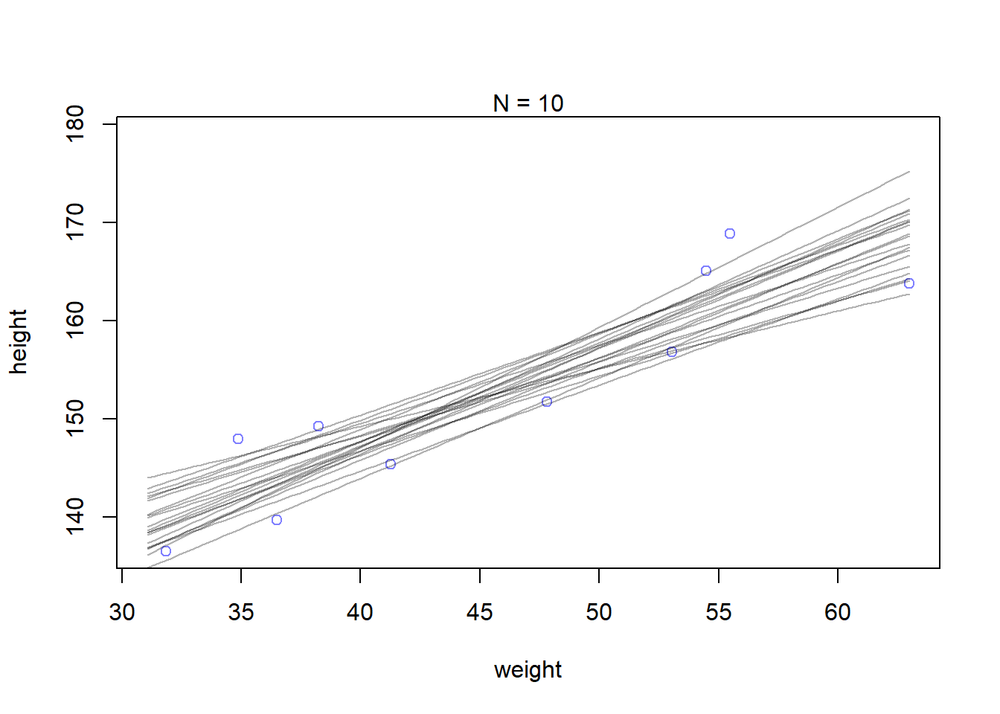
Plotting regression intervals and contours
Let’s find the quadratic posterior distribution of the mean height \(\mu\) when weight is 50 kg. This distribution represents the relative plausibility of different values of the mean:
post <- extract.samples(m4.3)
mu_at_50 <- post$a + post$b * (50-xbar)
dens(mu_at_50, col=rangi2, lwd=2, xlab="mu|weight=50")
Compatibility interval of \(\mu\) at 50 kg is:
## 5% 94%
## 158.5839 159.6832To do that for all weight values:
## num [1:1000, 1:352] 157 157 157 158 157 ...The resulted matrix contains 352 columns, each corresponds to one row in the d2 data. It contains 1000 rows, each represents a sample. Therefore, the matrix contains a distribution of \(\mu\) for each individual in the original data d2.
Let’s plot the Gaussian distribution for each mean value:
plot(height ~ weight, d2, type="n")
for(i in 1:100) points(d2$weight, mu[i,], pch=16, col=col.alpha(rangi2, 0.1))
The pile of points represents the rows.
The plot is kind of missy, let’s do that for a small group of weight values
weight.seq <- seq(from=25, to=70, by=1)
mu <- link(m4.3, data=data.frame(weight=weight.seq))
plot(height ~ weight, d2, type="n")
for(i in 1:100) points(weight.seq, mu[i,], pch=16, col=col.alpha(rangi2, 0.1))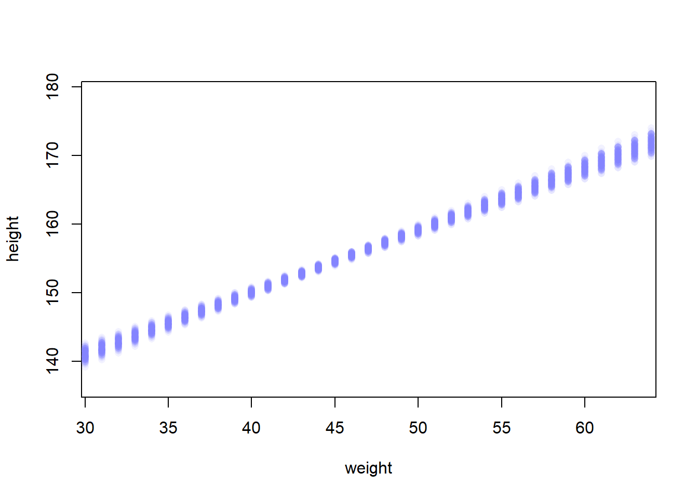
Now, let’s summarize the distribution of mu
# compute the mean of each column (dimension 2) of the matrix mu
mu.mean <- apply(mu, 2, mean)
mu.PI <- apply(mu, 2, PI, prob=0.89)
# plot the line and the interval
plot(height ~ weight, data=d2, col=col.alpha(rangi2, 0.5))
lines(weight.seq, mu.mean)
shade(mu.PI, weight.seq)
How link works
This approach can be used to generate posterior predictions for any component of any model
Summary: recipe of generating predictions and intervals from the posterior
- Use
linkto generate distributions posterior values for \(\mu\) - Use
meanorPIto find averages and bounds of \(\mu\) for each value of the predictor variable - Plot the lines and intervals using
linesandshadesor the distribution of the prediction given the value of predictor(s)
Prediction intervals
What we’ve done so far is just use samples from the posterior to visualize the uncertainty in \(\mu_i\). Now, we want to compute the predictions of heights that’s distributed according to: \(h_i \sim Normal(\mu_i, \sigma)\)
Let’s simulate heights:
# simulate 1e3 data by default
sim.height <- sim(m4.3, data=list(weight=weight.seq))
str(sim.height)## num [1:1000, 1:46] 146 139 136 135 138 ...The resulted matrix contains 1000 simulated heights (rows) for 46 weight values (columns). Let’s summarize it:
## [,1] [,2] [,3] [,4] [,5] [,6] [,7]
## 5% 128.1853 129.4536 130.1615 131.0184 131.5920 132.3106 133.6148
## 94% 144.4269 145.3213 146.0324 147.5608 148.3459 149.0710 150.5475
## [,8] [,9] [,10] [,11] [,12] [,13] [,14]
## 5% 135.5421 135.8942 136.3520 137.6058 138.6176 139.6518 140.1450
## 94% 151.3630 151.7098 152.9104 153.9036 154.4739 155.3530 156.1087
## [,15] [,16] [,17] [,18] [,19] [,20] [,21]
## 5% 140.8575 141.6930 143.4392 143.9476 144.7856 145.0695 146.4285
## 94% 157.2042 158.1098 158.6873 159.7029 160.9985 161.8457 162.9799
## [,22] [,23] [,24] [,25] [,26] [,27] [,28]
## 5% 147.0674 148.4928 149.2981 150.1580 151.7772 151.4979 152.9998
## 94% 163.1741 164.9025 165.5837 165.9044 166.7547 167.7817 168.9641
## [,29] [,30] [,31] [,32] [,33] [,34] [,35]
## 5% 154.1103 154.4654 155.6601 156.6560 157.6031 158.3161 159.5117
## 94% 169.7019 170.2732 171.7155 171.8713 173.9521 174.8402 175.4895
## [,36] [,37] [,38] [,39] [,40] [,41] [,42]
## 5% 160.4609 160.9952 161.3552 162.1338 163.4090 164.5611 165.1676
## 94% 176.2916 177.2782 178.1800 179.4627 180.3177 180.4383 181.5567
## [,43] [,44] [,45] [,46]
## 5% 165.5014 167.6589 168.1717 168.8493
## 94% 182.5953 183.3265 184.1630 185.3150Now, height.PI contains the 89% (we can use any interval) posterior prediction interval of observable heights across the values of weights in weight.seq (i.e. the boundaries of the simulated heights the model expects)
Let’s plot everything: 1. the average line (MAP line) 2. shaded region of 89% plausible \(\mu\) 3. boundaries of the simulated heights the model expects
# plot data points
plot(height ~ weight, d2, col=col.alpha(rangi2, 0.5))
# draw MAP line
lines(weight.seq, mu.mean)
# i used the border because the shade is not appearing for a bug related to R version
shade(mu.PI, weight.seq,border=TRUE)
shade(height.PI, weight.seq, border = TRUE)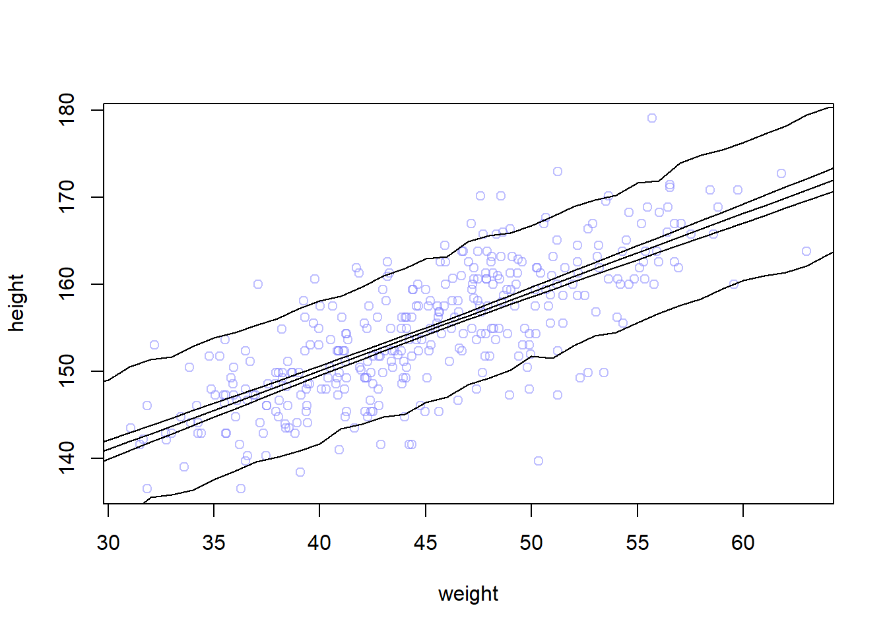
The narrow boundaries that are close to the line are the intervals of \(\mu\). The wider boundary is the region within which the model expects to find 89% of actual heights in the population at each weight.
The rouglness around the prediction interval is due to the simulation variance. We can decrease that by increasing the number of samples we take from the posterior.
sim.height <- sim(m4.3, data=list(weight=weight.seq), n=1e4)
height.PI <- apply(sim.height, 2, PI, prob=0.89)
# plot data points
plot(height ~ weight, d2, col=col.alpha(rangi2, 0.5))
# draw MAP line
lines(weight.seq, mu.mean)
# i used the border because the shade is not appearing for a bug related to R version
shade(mu.PI, weight.seq,border=TRUE)
shade(height.PI, weight.seq, border = TRUE)Curves from lines
We can build models to describe the outcome as a curved function of a predictor using the linear regression. Here are the common methods: 1. Polynomial regression 2. B-Splines
Polynomial regression
The following data is seen to be followed a curved relationship

We can use the parabolic equation for representing the mean height: \(\mu_i = \alpha + \beta_1 x_i + \beta_2 x_i^2\)
The last parameter \(\beta_2\) measures the curvature of the relationship
Because the polynomial equations involve computing the square or curve of large number, we need to standarize the predictor values in order to avoid the errors in computing estimates. To standarize weight values we do the following:
\[ x_{std.} = \frac{x - \mu_x}{\sigma_x} \]
This unit is called z-score. However, we will use \(x\) instead of \(x_{std.}\) in the following sections.
This is the definition of our model:
\(h_i \sim Normal(\mu_i, \sigma)\)
\(\mu_i = \alpha + \beta_1 x_i + \beta_2 x_i^2\)
\(\alpha \sim Normal(178, 20)\)
\(\beta_1 \sim Log-Normal(0, 1)\)
\(\beta_2 \sim Normal(0, 1)\)
\(\sigma \sim Uniform(0, 50)\)
Note that it is okay to have negative values for \(\beta_2\).
Let’s code that and fit the model to our data:
weight_s <- (d$weight - mean(d$weight)) / sd(d$weight)
weight_s2 <- weight_s ^ 2
m4.5 <- quap(
alist(
height ~ dnorm(mu, sigma),
mu <- a + b1*weight_s + b2*weight_s2,
a ~ dnorm(178, 20),
b1 ~ dlnorm(0, 1),
b2 ~ dnorm(0, 1),
sigma ~ dunif(0, 50)
), data=d
)
precis(m4.5)## mean sd 5.5% 94.5%
## a 146.055966 0.3690246 145.466193 146.645739
## b1 21.733838 0.2889247 21.272081 22.195596
## b2 -7.802658 0.2742178 -8.240911 -7.364405
## sigma 5.775142 0.1765168 5.493034 6.057251Let’s summarize the prediction and plot it:
weight.seq <- seq(from=-2.2, to=2, length.out=30)
pred_dat <- list(weight_s=weight.seq, weight_s2=weight.seq^2)
# compute predictions of mu for pred_dat as input
mu <- link(m4.5, data=pred_dat)
mu.mean <- apply(mu, 2, mean)
mu.PI <- apply(mu, 2, PI, prob=0.89)
# simulate height values
sim.height <- sim(m4.5, data=pred_dat)
height.PI <- apply(sim.height, 2, PI, prob=0.89)
plot(height ~ weight_s, d, col=col.alpha(rangi2, 0.5))
lines(weight.seq, mu.mean)
shade(mu.PI, weight.seq)
shade(height.PI, weight.seq)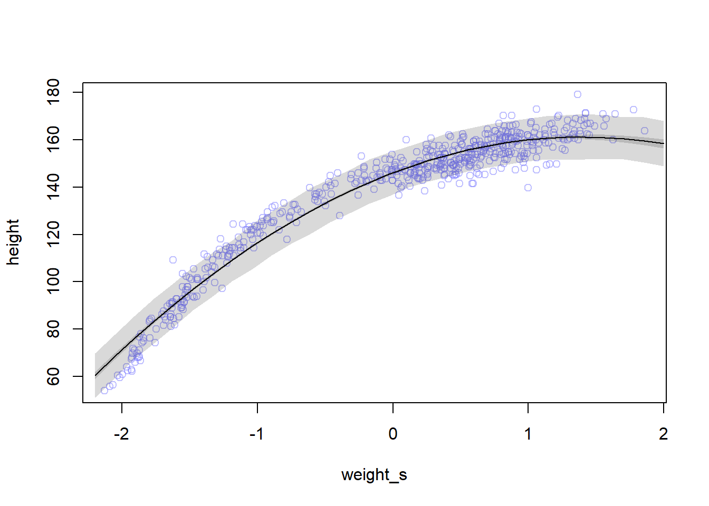
Remember that we are now working on the full data with both adults and non-adults, and that’s why the relationship is not linear as it was with the adults data.
Let’s try building cubic regression on weight:
\(h_i \sim Normal(\mu_i, \sigma)\)
\(\mu_i = \alpha + \beta_1 x_i + \beta_2 x_i^2 + \beta_3 x_i^3\)
\(\alpha \sim Normal(178, 20)\)
\(\beta_1 \sim Log-Normal(0, 1)\)
\(\beta_2 \sim Normal(0, 1)\)
\(\beta_3 \sim Normal(0, 1)\)
\(\sigma \sim Uniform(0,50)\)
weight_s3 <- weight_s ^ 3
m4.6 <- quap(
alist(
height ~ dnorm(mu, sigma),
mu <- a + b1*weight_s + b2*weight_s2 + b3*weight_s3,
a ~ dnorm(178, 20),
b1 ~ dlnorm(0, 1),
b2 ~ dnorm(0, 1),
b3 ~ dnorm(0, 1),
sigma ~ dunif(0, 50)
), data=d
)
precis(m4.6)## mean sd 5.5% 94.5%
## a 146.394541 0.3099872 145.899122 146.889960
## b1 15.219737 0.4762654 14.458573 15.980901
## b2 -6.202618 0.2571582 -6.613606 -5.791629
## b3 3.583373 0.2287735 3.217749 3.948997
## sigma 4.829890 0.1469427 4.595047 5.064732weight.seq <- seq(from=-2.2, to=2, length.out=30)
pred_dat_m4.6 <- list(weight_s=weight.seq, weight_s2=weight.seq^2, weight_s3=weight.seq^3)
mu <- link(m4.6, data=pred_dat_m4.6)
mu.mean <- apply(mu, 2, mean)
mu.PI <- apply(mu, 2, PI, prob=0.89)
sim.height <- sim(m4.6, pred_dat_m4.6)
height.PI <- apply(sim.height, 2, PI, prob=0.89)
plot(height ~ weight_s, d, col=col.alpha(rangi2, 0.5))
lines(weight.seq, mu.mean)
shade(mu.PI, weight.seq)
shade(height.PI, weight.seq)
The cubic model is more flexible than others and that’s why it fits well. However, we stoll have these issues in our model:
- Having a better fit \(\neq\) Having a better model
- All the models we built so far have no biological information. We haven’t learnt any causal relationship so far
The models are good geocentric model = meaning they describe the sample well
Note that the x-axis contains the standardized weight values. To convet back to natural scale, we need to remove the current axis and build the axis explicitly:
plot(height ~ weight_s, d, col=col.alpha(rangi2, 0.5), xaxt="n")
lines(weight.seq, mu.mean)
shade(mu.PI, weight.seq)
shade(height.PI, weight.seq)
at <- c(-2,-1,0,1,2)
# convert z-scores to weight values
labels <- at*sd(d$weight) + mean(d$weight)
axis(side=1, at=at, labels=round(labels, 1))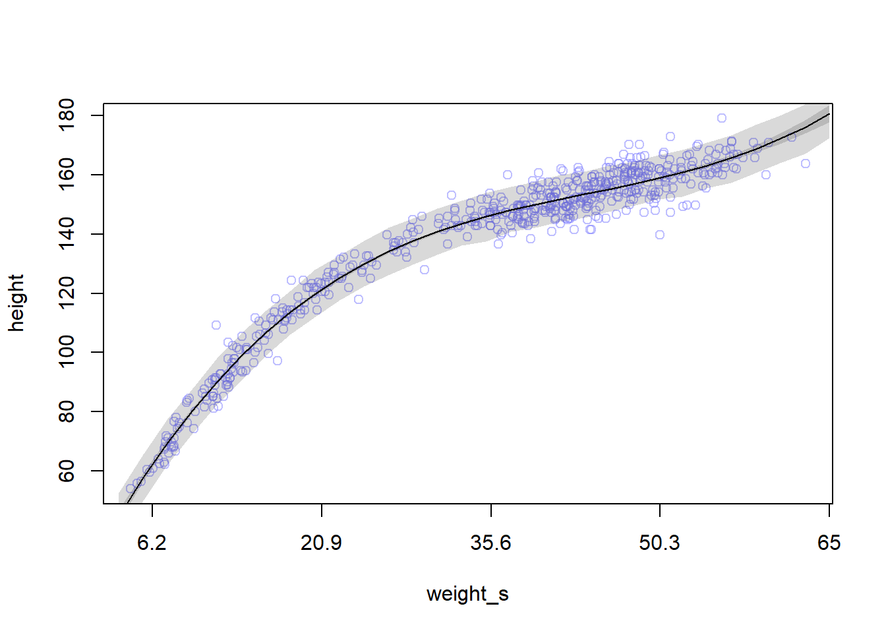
Splines
B-Spline stands for basis spline. It means that we can build wiggly functions from simple less-wiggly bassis components, that are basis functions
We will use data of a 1000 years of blossoms days
## mean sd 5.5% 94.5%
## year 1408.000000 350.8845964 867.77000 1948.23000
## doy 104.540508 6.4070362 94.43000 115.00000
## temp 6.141886 0.6636479 5.15000 7.29470
## temp_upper 7.185151 0.9929206 5.89765 8.90235
## temp_lower 5.098941 0.8503496 3.78765 6.37000The B-Spline model
d2 <- d[complete.cases(d),]
num_knots = 15
knot_list <- quantile(d2$year, probs=seq(0, 1, length.out=num_knots))library(splines)
# create B-spline basis matrix
B <- bs(d2$year,
knots=knot_list[-c(1, num_knots)], # -c(1, num_knots) means exclude the 1st and last element
degree=3,
intercept=TRUE)# Create an empty plot with specified axes
{
plot(NULL, xlim=range(d2$year), ylim=c(0,1), xlab="year", ylab="basis", type="n")
# Plot knots
for (knot in knot_list) {
# Add a vertical line for each knot
abline(v = knot, col = "red", lty = 2, lwd = 2)
}
# Plot each column in the basis matrix against year
for (i in 1:ncol(B)) {
# Add lines for each column
lines(d2$year, B[, i])
}
}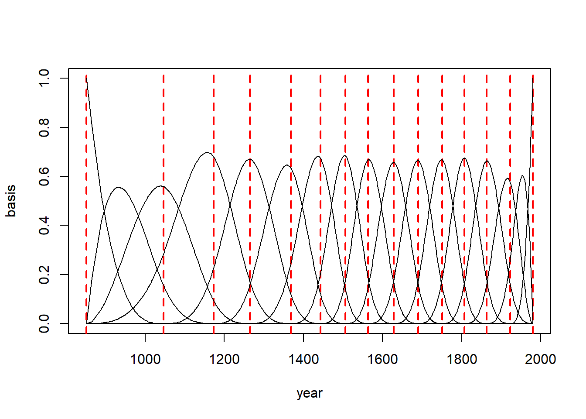
Building the model with quap
m4.7 <- quap(
alist(
D ~ dnorm(mu, sigma),
mu <- a + B %*% w, # matrix multiplication
a ~ dnorm(100, 10),
w ~ dnorm(0, 1),
sigma ~ dexp(1)
),
data=list(D=d2$doy, B=B),
start=list(w=rep(0, ncol(B)))
)Let’s look at the posterior means:
## 17 vector or matrix parameters hidden. Use depth=2 to show them.## mean sd 5.5% 94.5%
## a 104.705268 0.3330644 104.172966 105.237569
## sigma 6.074996 0.1541797 5.828587 6.321405Let’s plot the posterior predictions:
post <- extract.samples(m4.7)
# find the mean of all weights
w <- apply(post$w, 2, mean)
plot(NULL, xlim=range(d2$year), ylim=c(-4,4),
xlab="year", ylab="basis * weight")
# plot the basis * weight for each column
for (i in 1:ncol(B)) lines(d2$year, w[i]*B[,i])
# plot knots
for (knot in knot_list) {
abline(v = knot, col = "red", lty = 2, lwd = 2)
}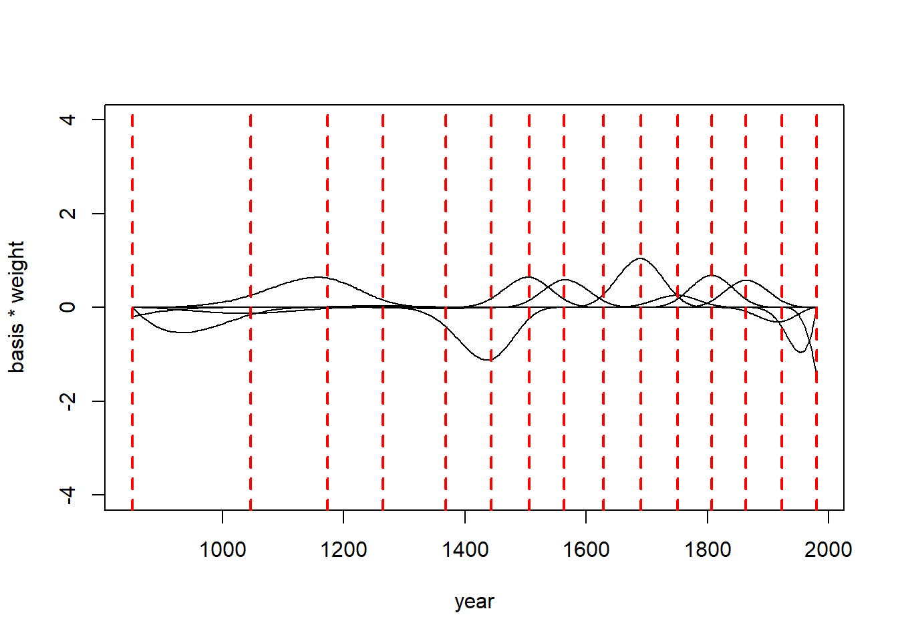
# 97% posterior interval for mu at each year
mu <- link(m4.7)
mu.PI <- apply(mu, 2, PI, 0.97)
plot(d2$year, d2$doy, col=col.alpha(rangi2, 0.3), pch=16)
shade(mu.PI, d2$year, col=col.alpha("black", 0.5))
abline(h = mean(d2$doy, col="black"))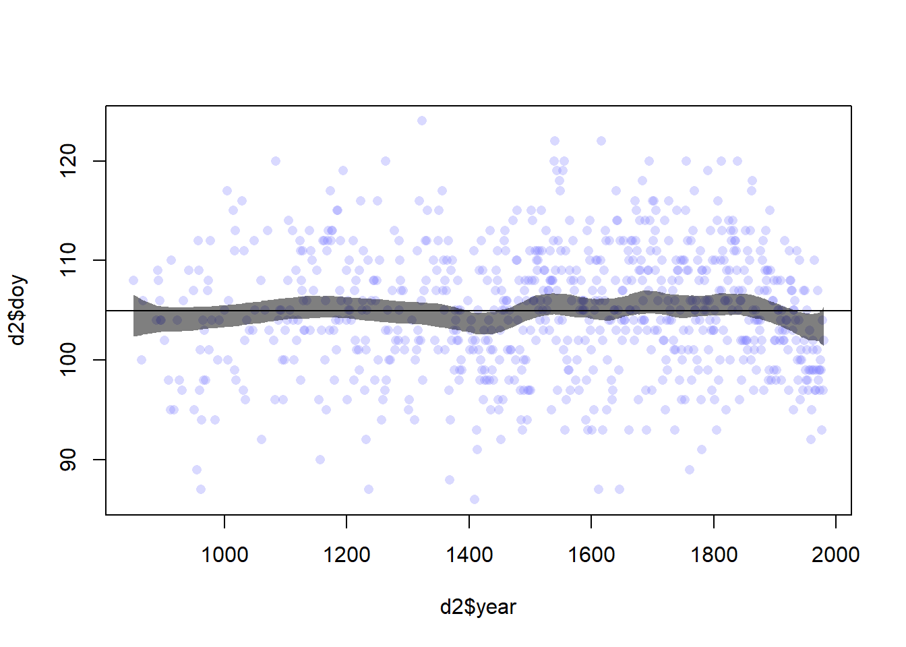